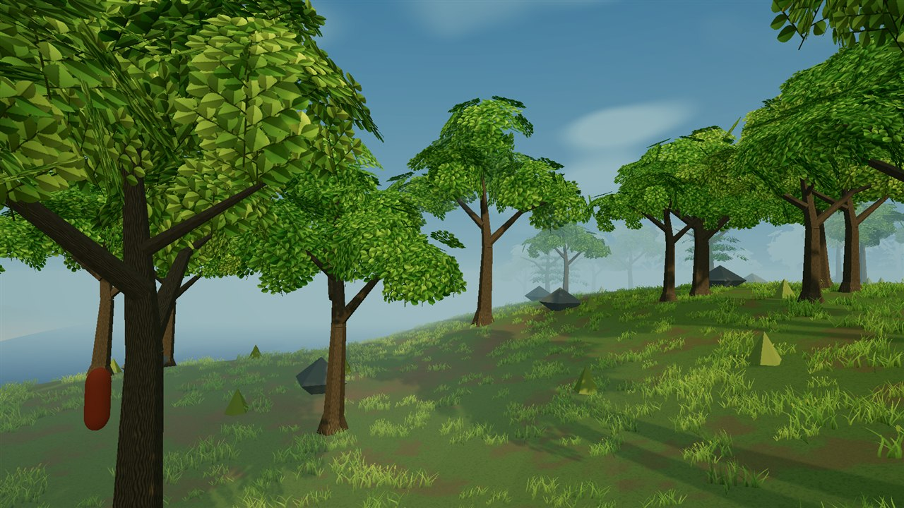

02 / CANOPY
Under the leaves
Textured leaf sprays create gaps in the canopy. Bark, branching, and mist establish the forest edge.

02 / CANOPY
Textured leaf sprays create gaps in the canopy. Bark, branching, and mist establish the forest edge.
